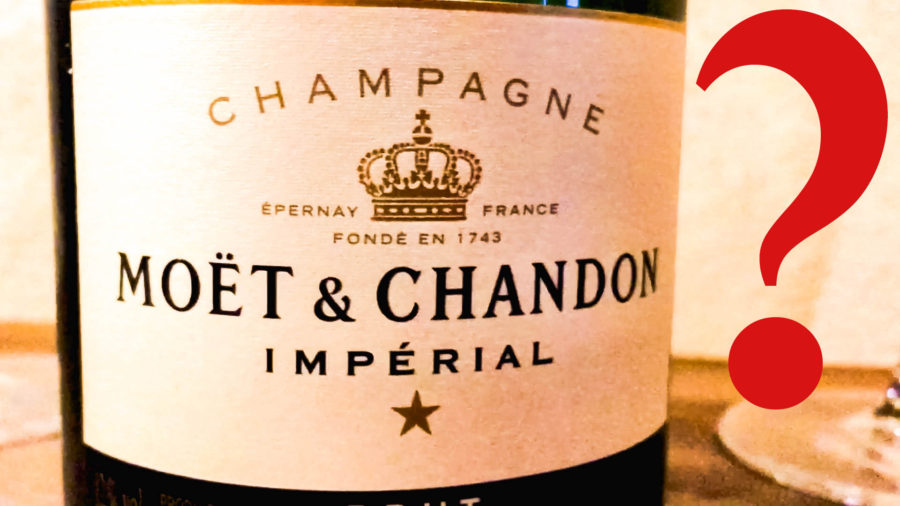
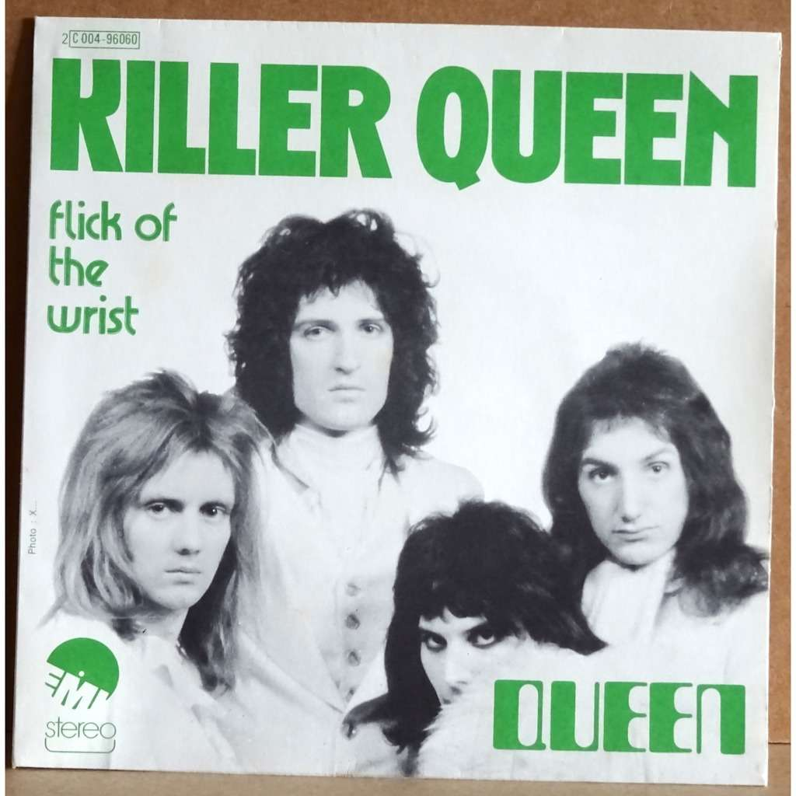
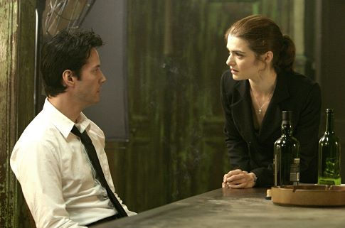
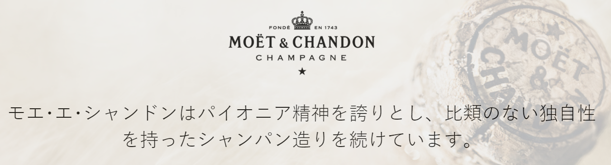

나폴레옹은 모에-샹동을 마셨을까 모엣-샹동을 마셨을까 ?
게시: 2019-12-26T06:30:46+09:00
최근에 조선일보에서 조선일보답게 유명 와인 브랜드인 Moët & Chandon 관련된 기사를 냈더군요. 프랑스 샹파뉴(Champagne) 지방의 에페르네(Épernay) 현지 취재 기사였는데, 그냥 Moët & Chandon 사의 광고 이하도 이상도 아닌 그런 기사였습니다. https://m.chosun.com/news/article.amp.html?sname=news&contid=2019122000173 제가 이 기사를 클릭한 것은 어떤 포털에서 '나폴레옹이 사랑한 술, 승리의 순간마다 삼켰다'라는 제목을 보았기 때문이었습니다. 제가 알기로 나폴레옹이 진짜 좋아해서 항상 챙겼던 와인은 부르고뉴(Bourgogne) 지방의 샹베르텡(Chambertin) 와인이었기 때문에, 아마 그 와인 이야기인 모양이라고 생각했습니다. 그런데 뜻 밖에 Moët & Chandon 이야기더라고요. 기사에는 다음과 같이 나왔습니다. "프랑스 황제 루이 15세가 이곳 와인을 마셨고, 1801년엔 나폴레옹 보나파르트가 이곳에 직접 와서 모엣&샹동 창립자의 손자인 장 레미 모엣에게서 샴페인을 사갔다. 이후 황제가 된 보나파르트는 전쟁에서 이기거나 기쁨을 만끽하고 싶은 때마다 모엣의 샴페인을 사들였다. 부인 조제핀 황후가 대관식을 치를 때도 이곳 술을 사용했다." 솔까말 나폴레옹이 뭐 동네 아저씨도 아니고 자신이 직접 와인 쇼핑이나 하러 다녔을 것 같지는 않습니다. 나폴레옹 대관식이면 나폴레옹 대관식이지 조제핀 황후가 대관식을 치른다는 이야기도 좀 이상하고요. 저는 나폴레옹 관련 책이나 블로그 등을 꽤 많이 본 사람 중 하나라고 자부하는데, 나폴레옹이 Moët & Chandon을 좋아했다는 소리는 처음 들었거든요. 근데 어차피 확인할 방법도 없는 그런 건 중요한 것이 아니고, 제 눈길을 사로잡았던 것은 바로 모엣&샹동이라는 표기였습니다. 고등학교 다닐 때 제2 외국어로 불어를 택했었다는 것 외에는 아무 내세울 것이 없는 저로서는 여태까지 Moët et Chandon을 모에-떼-샹동이라고 읽어왔었거든요. (원래 불어에서는 거의 대부분 끝부분의 s나 t는 발음하지 않으니 모에-에-샹동이 되겠습니다만, 연음법칙에 의해 끝부분의 t가 그 다음 단어 et와 연음되어 모에-떼-샹동이라고 읽습니다.) 이걸 저 기사를 쓴 기자분이 프랑스어를 몰라서 저렇게 적었다고는 생각하지 않습니다. 프랑스 현지에서 취재한 건데 저 상표의 발음을 몰라서 저렇게 적었을 것 같지는 않거든요.

와인을 즐기지 않으시는 분들이라도 (저도 와인 안 좋아합니다, 저는 서민답게 맥주 좋아합니다) 팝을 좋아하시는 분들이라면 모에-떼-샹동은 한번쯤 들어보셨을 만한 와인 브랜드입니다. 영국 락그룹 퀸(Queen)의 초기 명곡 중 하나인 Killer Queen의 첫부분에도 나오는 와인이거든요. She keeps her Moet et Chandon In her pretty cabinet "Let them eat cake", she says Just like Marie Antoinette 그녀는 모에-에-샹동을 따로 보관한다네 예쁜 캐비넷에 말이지 "(빵이 없으면) 과자를 먹으라고 해" 라고 말하지 정말 마리 앙투아네뜨 같다니까

저는 이 기사의 모엣&샹동이라는 표기를 보고 Killer Queen 가사가 생각났는데, 생각해보니 이 노래에서 프레디 머큐리가 Moet et Chandon을 뭐라고 발음했는지 잘 기억이 안 나더군요. 저는 막연히 모에-에-샹동으로 들린다고 생각했는데, 원래는 모에-떼-샹동이라고 읽어야 하거든요. 다시 두번 세번 들어보니, 잘 알아들을 수는 없지만 '모엣-에-샹동' 이라고도 들리는데 제가 영어 리스닝에 서툴러서 잘 모르겠더라고요.
미국인들이나 영국인들도 프랑스어로 된 이름들은 발음하기가 고민되는 것은 마찬가지입니다. 특히 그럴 수 밖에 없는 것이, 영국과 프랑스는 교류가 잦다보니 편지나 신문, 책 등이 서로 오가면서 입에 오르내리게 되는데 프랑스어 스펠링으로 된 것이 영국식 발음으로 굳어진 것들이 꽤 많습니다. 가령 Nicolas는 프랑스에서는 니꼴라지만 영국에서는 니콜라스입니다. Bourbon은 프랑스에서 부르봉 왕가의 이름이지만 미국에서는 버번 위스키입니다. 모에-떼-샹동은 샴페인(Champagne)의 일종인데, 샴페인이라는 것도 영국식 발음일 뿐이고 본고장인 프랑스에서는 상파뉴라고 읽습니다. 이건 프랑스 이름에만 해당하는 이야기는 아니고 독일 이름이나 이탈리아 이름 등에도 영어식 표기와 영어식 발음이 따로 있기 때문에 어떤 것을 기준으로 해야 하는지 헷갈리기도 하고 고민도 됩니다. 가령 프랑스 이름 Louis(루이)가 영국으로 건너오면서 루이스로 읽히는 것은 물론이고 아예 스펠링까지 Lewis로 바뀌었는데, 동일한 이 이름을 독일에서는 루드비히(Ludwig)라고 부릅니다. 더 헷갈리는 것은 역사적 인물을 다룰 때는 아예 자기식으로 스펠링까지 바꿔버리는 경우가 많다는 것입니다. 프랑스 왕 프랑수와 1세 (Francois I)를 표기할 때는 아예 프랜시스 1세 (Francis I)로 해버리는 식이지요. 우리가 류페이를 '유비'로, 또요또미 히데요시를 '풍신수길'로 표기하는 것과 마찬가지입니다.
최근 극장에서 본 영화가 있는데 대니얼 크레이그 주연의 '나이브즈 아웃'(Knives Out)이라는 추리물이었습니다. 크리스 에반스와 크리스토퍼 플럼머 등 유명한 배우들이 잔뜩 출연하는 이 영화에서 대니얼 크레이그는 사설 탐정으로 나오는데, 극중 이름이 Benoit Blanc 입니다. 이걸 프랑스식으로 읽으면 '베누아 블랑'(사실은 블랑보다는 블롱에 가까운 발음이 납니다)이고 영어식으로 읽으면 '벤노잇 블랑크'입니다. 그런데 영화를 보면서 사람들 대사를 유심히 들어보면 대략 '비누와 블랑(ㅋ)'라고 Blanc의 끝에 붙은 c를 완전히 묵음 처리하지 않고 약간 k 발음을 내는 것이 들립니다. 등장 인물 중 하나는 아예 이 이름을 '블랭크(Blank)'라고 발음을 하는데, 그러자 대니얼 크레이그가 다소 곤란하다는 듯한 미소를 띠면서 '블랑(ㅋ)'라고 읽어달라고 하는 장면도 나옵니다. 그러니까 결국 프랑스 이름이지만 미국식으로 읽긴 하는데, 완전히 미국식도 아닌 셈입니다. 아래의 짧은 비디오 클립을 보면 '미스터 블랑(ㅋ)'이라는 발음을 들으실 수 있습니다. https://www.facebook.com/KnivesOutOfficial/videos/422982011707870/ 왜 미국을 배경으로 한 영화 속의 미국인 탐정이 프랑스식 이름을 가졌는지에 대해서는 영화 속에서는 설명이 없지만, 이 영화의 시나리오 작가이자 감독인 라이언 존슨(Rian Johnson)이 어떤 매체와 인터뷰를 한 것을 보면 정답이 나옵니다. 질문) 이 영화 속 등장 인물 이름 중에는 아주 굉장한 것들이 있더군요. 그 중 어느 것이 가장 자랑스러우신지요 ? 답) 음, 비누와 블랑은 확실히 괜찮다고 생각해요. 예전 프랑스어 강사의 이름이 베누와였는데, 그 이름이 마음에 들었거든요. 거기에 미국인들이 좀 골치 아파할 성을 붙이면 좋겠다고 생각했어요. 마치 포와로(Poirot : 아가사 크리스티 추리 소설 속 벨기에 국적의 탐정 이름)처럼요.

Rachel Weisz라는 정말 우아하게 아름다운 여배우가 있습니다. 이 배우의 남편이 대니얼 크레이그더라고요. 대니얼 크레이그처럼 레이첼도 영국 사람입니다. 저는 처음 미이라 시리즈와 콘스탄틴에서 이 여배우를 봤을 때만 해도, 이 배우 이름이 레이첼 와이즈라고만 알고 있었습니다. 스펠링이 어떻게 되는지도 몰랐고요. 그런데, 최근에서야 이 사람의 이름은 와이즈가 아니라 바이스라고 한다는 것을 알았습니다. 그런데 그렇게 잘못 알고 있던 것이 저 뿐만은 아니고 미국인들도 많이 그렇게 잘못 알고 있었더군요. 다들 스펠링을 보고, 또 이 배우가 영국 출신이니까 그냥 영어식으로 '와이즈'라고 읽은 것이지요. 많은 경우, 외국식 스펠링을 가진 가문에서도 미국이든 프랑스든 타국에 정착했을 때 해당 타국식 발음으로 아예 이름을 바꿔 부르는 경우가 많습니다. 미국 연예계 기자들이 저걸 독일어식으로는 '바이스'라고 발음해야 한다는 것을 몰라서 '와이즈'로 읽은 것이 아닙니다.
그런데 그걸 뭐라고 읽어야 하는지는 오로지 본인의 선택입니다. 레이첼 바이스도 처음에 미국에 왔을 때는 사람들이 '미즈 와이즈'라고 부를 때 예의상 그냥 내버려 두었다고 합니다. 무려 8년 동안이나요. 그러다가 이제 좀 정착한 뒤에는 자기 이름을 되찾아야겠다면서 사람들에게 '와이즈'가 아니라 '바이스'라고 그때그때 수정을 해주기 시작했다고 합니다.
이야기를 다시 Moët & Chandon의 발음 문제로 돌리지요. 비록 저 기사를 쓴 기자분이 프랑스 현지 샤또에 가서 취재를 했다고 해도, 아마 저 취재는 영어로 했을 것 같습니다. 외국에서 온 기자들을 위해 언론 담당 직원이 프랑스어를 고집했을 것 같지는 않거든요. 그러니까 제 처음 짐작으로는 저 기자분은 현지 직원이 영어식 발음인 모엣-앤-샹동이라고 발음하는 것을 듣고 쓴 것 아닐까 싶었습니다. 실제로 국내에서는 모엣-샹동이라는 한글 표기와 모에-샹동이라는 한글 표기가 모두 사용됩니다. 프랑스식으로 읽어야만 유식하고 영어식으로 읽으면 무식한 것은 아닐테니 어떤 표기이건 둘 다 맞을 것입니다. 그런데 프랑스 사람들도 글자만 보고는 고유한 이름의 발음을 어떻게 해야 하는지 헷갈리는 경우가 종종 있습니다. 가령 레미제라블의 주요 등장 인물인 Enjolras를 '앙졸라스'라고 읽어야 하는지 '앙졸라'라고 읽어야 하는지는 오래된 논쟁입니다. 이럴 때 가장 좋은 방법은 그냥 그 이름의 주인에게 뭐라고 읽어야 하는지 묻는 것입니다. 레미제라블의 작가 빅토르 위고는 이미 이 세상 분이 아니니 물을 수 없지만 Moët & Chandon은 번창하는 회사이니 당연히 한글 홈페이지가 있을 것입니다. 찾아보니... 좋아해야 할 일인지 자존심 상해야 할 일인지 한글판 페이지는 없더군요 ! 그런데 일본어 홈페이지는 있습니다 ! https://www.lvmh.co.jp/%E3%83%A1%E3%82%BE%E3%83%B3/%e3%83%af%e3%82%a4%e3%83%b3-%e3%82%b9%e3%83%94%e3%83%aa%e3%83%83%e3%83%84/moet-chandon/

보시다시피 일본어 표기는 '모에-에-샨돈'으로 되어 있습니다. 여기에 굴하지 않고 계속 뒤져보니 프랑스 국가 홍보 웹 사이트에서 Moët & Chandon에 대해 한글로 표기한 부분이 있었습니다. 여기서는 또 '모엣샹동' 이라고 표기하더군요. 그런데 더 희한한 것은 다음과 같이 모엣샹동이라고 표기하면서도 사람 이름은 '모에'라고 프랑스식으로 쓴다는 것입니다. "모엣샹동의 설립자들인 모에와 샹동, 메르시에를 만든 유진 메르시에 등, 거리 이름마저 샴페인 명인들의 이름으로 가득한 에페르네의 땅 밑은 또 다른 샴페인 왕국이다." 어쩌면 여기서도 한국에서는 워낙 모엣샹동으로 많이 알려져 있으니 그냥 모엣샹동이라고 쓴 것일 수 있습니다. 그런데 여기에 일을 더 복잡하게 만드는 설명이 있습니다. 모에(Moët)는 분명히 프랑스 국적의 가문이지만 원래 이 가문은 프랑스가 아니라 네덜란드 출신 가문이라고 합니다. 그래서 원래 이름을 모에가 아니라 모웻이라고 읽어야 한다고 합니다. 이건 Moët 가문 사람을 직접 인터뷰한 기사에서 읽은 것은 아니고, Moët & Chandon 뉴질랜드 지사의 PR 담당자인 Helen Vause라는 분과 인터뷰한 기사에 나온 내용입니다. 그럼에도 불구하고 전세계적으로, 또 프랑스인들조차도 많은 사람들이 그냥 모에라고 읽는 것이 현실인 모양입니다. 그럴 수 밖에 없는 것이, 많은 경우 프랑스에 정착한 외국인들이 가문 이름의 발음을 그냥 프랑스식 발음으로 택하는 경우가 많거든요. 대표적인 사람이 바로 나폴레옹 본인입니다. 원래 이탈리아식 이름인 부오나파르떼(Buonaparte)를 프랑스식 보나빠르뜨로 바꿨지요. 나폴레옹의 근위 기병대를 이끌었던 Frédéric Henri Walther 장군은 독일계인 알사스 지방 사람이었지만 발터가 아니라 왈더라고 불렸습니다.
결론적으로... 모에-샹동인지 모에-떼-샹동인지 모엣-샹동인지 그냥 내키시는 대로 부르시면 됩니다. 뭐라고 불러도 프랑스인이든 미국인이든 한국인이든 다 알아들을 것이 틀림없거든요. 중요한 것은 남이 뭐라고 읽든 간에 함부로 지적질하지 않아야 한다는 것 같습니다. 특히 저처럼 달랑 고등학교 때 배운 불어로 아는 척 하면 큰일나겠습니다. P.S. 모에-떼-샹동과 나폴레옹과의 관계를 찾아보느라고 이것저것 웹사이트를 뒤지다 읽은 나폴레옹의 명언이 있습니다. 정말 나폴레옹이 한 말인지는 굉장히 의심스럽습니다만, 말이 그럴싸해서 여기에 옮깁니다. “Champagne! In victory one deserves it, in defeat one needs it.” 샴페인이라 ! 승자에겐 마실 자격이 있고, 패자에겐 마실 필요가 있지.
Source : https://kr.france.fr/ko/champagne/article/118417 https://www.winemonopole.com/blogs/newsletter/7129320-napoleon-and-chambertin# https://vinepair.com/booze-news/pronounce-moet-chandon-complicated/ https://en.m.wikipedia.org/wiki/Knives_Out_(film) https://vinepair.com/articles/napoleon-moet-a-secret-history/ https://screencrush.com/rian-johnson-knives-out-interview/
http://socialvignerons.com/2019/06/17/how-to-pronounce-moet-chandon-explained/
http://nymag.com/intelligencer/2009/05/rachel_weisz_is_going_to_start.html